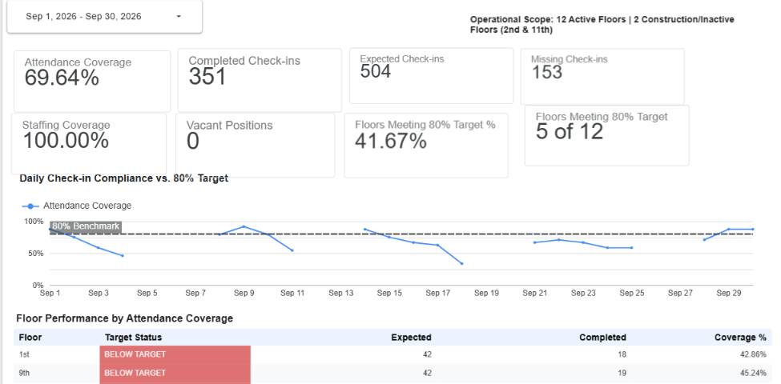
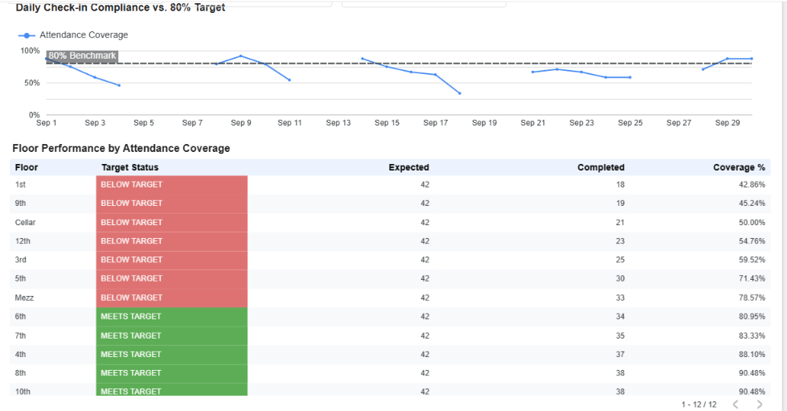
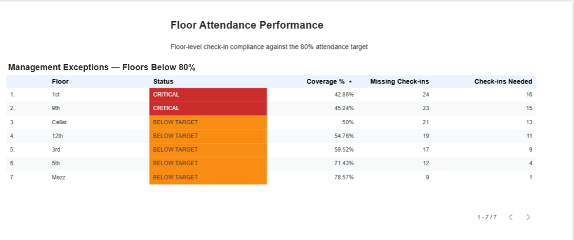

01 / BUSINESS PROBLEM
How can management spot attendance gaps before they become persistent operational problems?
Individual Fire Warden check-in records show who reported, but do not readily reveal which floors are underperforming, whether required positions are staffed, or where follow-up should be prioritized. This project organizes those records into a consistent reporting model that separates staffing capacity from attendance execution.
Business challenge
Raw check-in records are difficult to summarize consistently across floors and reporting dates.
Analytical solution
Use BigQuery SQL views to calculate validated attendance, staffing, target and exception metrics.
Management outcome
Highlight below-target floors and quantify the gap requiring corrective follow-up.
02 / SEPTEMBER 2026 RESULTS
Executive KPI snapshot
Reporting scope: 12 active floors. Two additional floors were categorized as inactive/construction and excluded from the active-floor target calculation. The 80% threshold is a project attendance benchmark, not a stated regulatory standard.
Attendance Coverage
351 completed out of 504 expected check-ins.
Completed Check-ins
Recorded attendance completions during the reporting period.
Missing Check-ins
Expected attendance opportunities without a completed check-in.
Floors Meeting Target
5 of 12 active floors achieved at least 80% coverage.
Active Staffing Coverage
All 24 active Fire Warden and Deputy Warden positions were assigned.
Active Vacancies
Four inactive/construction positions were not counted as active vacancies.
Attendance coverage = completed ÷ expected × 100. Active staffing coverage = assigned active positions ÷ all active positions × 100. Floor target attainment = active floors at or above 80% ÷ active floors × 100.
03 / DATA ARCHITECTURE
From operational records to decision support
The designed workflow connects QR check-ins and roster data with cloud transformation and reporting. The published September case study uses sanitized portfolio datasets and BigQuery reporting views; it does not claim that every live automation step has been deployed.
Supporting source: Sanitized historical attendance and roster records can also be imported from Excel/CSV into BigQuery.
Roster dimension
Participant ID, floor, role, assignment dates, roster status, assigned flag and roster version.
Check-in fact
Check-in date, anonymized participant ID, floor, role, checked-in flag and reporting month.
Reporting layer
Reusable SQL views for executive KPIs, roster coverage, floor targets, daily trends, readiness and exceptions.
04 / DATA MODEL & KPI RULES
Two datasets, distinct management questions
| Dataset | Key fields | Analytical role |
|---|---|---|
| Fire Warden roster | participant_id, floor, role, roster_status, is_assigned | Defines active assignments and staffing availability. |
| Fire Warden check-ins | check_in_date, participant_id, checked_in, reporting_month | Measures attendance completion and missing check-ins. |
| KPI | Business rule |
|---|---|
| Attendance coverage | Completed check-ins ÷ expected check-ins × 100 |
| Missing check-ins | Expected check-ins − completed check-ins |
| Floor meets target | Floor attendance coverage ≥ 80% |
| Active staffing coverage | Assigned active positions ÷ active positions × 100 |
| Readiness | Whether all assigned positions completed their expected check-ins for a staffed floor-day |
05 / BIGQUERY SQL
Reusable reporting views
Business rules live in BigQuery instead of being independently recreated in dashboard charts. The queries below read the project's reporting views.
SELECT
reporting_month,
expected_checkins,
completed_checkins,
missing_checkins,
attendance_coverage_pct,
floors_meeting_target,
total_floors,
floors_meeting_target_pct,
active_staffing_coverage_pct,
active_vacant_positions
FROM `fire-warden-command-center.fire_warden_analytics.vw_executive_kpi`
ORDER BY reporting_month;SELECT *
FROM `fire-warden-command-center.fire_warden_analytics.vw_monthly_floor_target_kpi`
ORDER BY reporting_month DESC;SELECT *
FROM `fire-warden-command-center.fire_warden_analytics.vw_daily_checkin_kpi`
ORDER BY check_in_date;SELECT *
FROM `fire-warden-command-center.fire_warden_analytics.vw_management_exceptions`;The full CREATE VIEW definitions are documented in the repository's SQL folder. Column selection for the last three examples is intentionally left as SELECT * so it does not assume unverified column names.
06 / LOOKER STUDIO DASHBOARD
From executive overview to actionable exceptions
The reporting design covers executive KPIs, floor attendance performance, readiness and coverage gaps, daily trends, and data definitions. Below are three screenshots from the portfolio reporting work.
Executive compliance overview

Floor attendance performance

Management exceptions

Dashboard screenshots from the September 2026 Fire Warden Compliance & Readiness Analytics project, developed using Google BigQuery, SQL, and Looker Studio.
07 / PERFORMANCE ANALYSIS
What the September data revealed
08 / MANAGEMENT RECOMMENDATIONS
Turn analytics into operational follow-up
01. Prioritize exceptions
Review the 1st and 9th Floors first because their attendance coverage was lowest.
02. Address near-target gaps
Focus on the Mezzanine, which needed just one additional completed check-in to meet the project benchmark.
03. Track daily trends
Use reporting-date analysis to distinguish recurring problems from isolated missed check-ins.
04. Separate causes
Investigate check-in execution before treating a fully staffed floor as a recruitment problem.
05. Compare best practices
Examine processes on higher-performing floors for transferable attendance practices.
06. Expand reporting
Extend the model to historical periods, roster changes and automated management reporting.
09 / PROJECT STATUS
Current delivery and next development
Completed: September 2026 analytical reporting model, six documented BigQuery reporting views, sanitized portfolio datasets and Looker Studio dashboard reporting.
Planned extensions: Automated monthly, quarterly and annual reporting; historical comparisons; effective-dated roster changes; Fire Warden training and drill participation; and expanded Fire & Life Safety operational analytics. These extensions are roadmap items, not features claimed as already deployed.
Privacy: Published portfolio data uses anonymized participant identifiers and omits employee names, telephone numbers and exact site location.